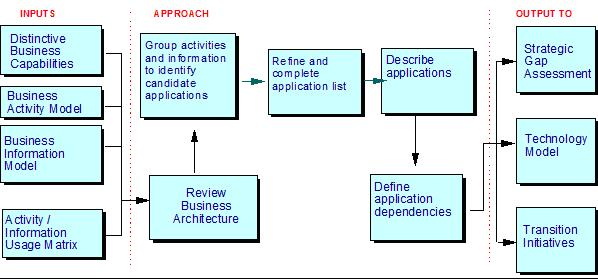
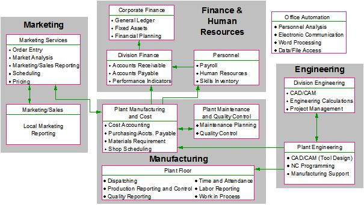

1 Description
The Application Function Modeling technique is aimed at the identification and definition of the major groups of
business function that are required in order for the enterprise to meet its business objectives. The technique achieves
this by identifying the natural boundaries and groupings of business functions and organising them into a set of
optimal applications, (or application groups).
These groups are derived by a combination of matrix analysis and clustering techniques, followed by some refinement of
the clusters/groups. The initial grouping & partitioning is done with the aim of minimising the sharing of data across
groups and maximising the sharing within groups. Further, subsequent, refinement is completed using the business strategy
and the IT principles.
The Application Function Model, generated using this technique, will usually be represented by a combination of text,
matrices and diagrams. Several diagrams may show the overall view of the applications, or groups, and their
inter-relationships, as well as their decomposition into smaller units. Definitions of the applications will be
provided textually. Different engagement objectives, scope and customer preferences may demand variations on the
notation.
2 Context
An Application Function Model is a key component part of an Application Architecture and application functions should
always be defined together with the data stores used.
For the purposes of this technique paper, the following definitions are used:
Application (Group): "a grouping of logical business activities that have a high affinity for
each other in terms of the business information they manage and which address the processing requirements of a
recognisable business area"
Application Function Model: "a structural framework showing the optimal and non-redundant logical
groupings of business function and the relationship between these groupings"
Note that there is no real difference between the terms "Application Group" and "Application". The term "Group" is used
simply to allow several levels of abstraction to be shown when the scope of the model is large and where the business
functionality is complex. In such cases, the model will show several levels, or layers, of application function. Each
level represents increasing granularity.
3 Steps
The Application Function Modeling technique involves 2 main steps:
-
Identify Applications
• Review Business Architecture
• Identify Candidate Applications
• Refine & Complete the Application List
-
Define Applications
• Describe Application
• Define Application Dependencies
These activities and their constituent tasks are shown below.

Step 1 - Identify Applications
This step takes the Activity/Information Usage Matrix (an instance of the Process/Data Usage Work Product) as
input and, using matrix analysis and clustering techniques, groups the business functions into clusters (or application
groups), based on their common associations with the Business Information entities and subject areas. These draft
application group definitions are further refined and may be decomposed to identify constituent applications.
Note: if the work products highlighted below, plus their respective outputs, do not exist, time will be needed to
assess whether equivalent inputs are available to enable this step to be completed effectively. If no equivalent inputs
are available, additional time may be needed to produce them to a level sufficient for the project to proceed.
Alternatively, consider using sample industry based application function models, in existing IC, as a starting point.
Task - Review Business Models: The Business Architecture work products are critical inputs to the
development of the Application Function Model. This task is aimed at ensuring that these inputs are of sufficient
quality, in terms of consistency and accuracy. Where there is continuity of staff between this and the
Activity/Information Usage Matrix, then the task may be omitted. Where there is no such continuity, this task provides
the model development team with a better understanding of the input work products.
Review the Enterprise Information Model (WP). Ensure the information entities and subject areas are discrete and
distinct and that the complete scope of the business information is represented.
Review the Business Activity Model (instance of the Process Identification work product).
Review the Activity/Information Usage matrix (instance of the Process/Data Usage work product). This is perhaps the
most critical input to this task. This matrix provides the basis for the first step in the identification of
applications (i.e. the grouping of the activities). In particular, we want to identify:
-
Business Activities that have no interaction with any category of business information.
-
Business Activities .that neither create nor update any category of business information (i.e. only reference
information)
-
Business Activities that create many different types of business information
-
Business Activities that update many different types of business information
-
Business Information that is not created by any of the activities (but is updated/referenced). In some cases, with
a very limited scope, there may be a need to reference data that is created by activities that are outside the
scope. Review and verify these interactions.
-
Business Information that has no interaction with any of the activities (no creates, updates or references). In
most cases a creation activity will be required. Review the documented activities to identify those that will
create the information or identify a new activity.
-
Business Information that is created but never updated or referenced - this can occur when different teams have
completed the Business Activity Model, for different areas of the business.
-
Business Information that is created by lots of different activities. This in itself may not be wrong, particularly
where the activity model is at a low level and the activities concerned all belong to the same logical business
area. However, this also occurs as a result of poorly understood business activities, or because the activities and
the information are too generic, (the latter is often the case when dealing with high-level model constructs). When
the activity is generic and involved with many information entities and subject areas, consider decomposing it
further. When the information is generic and created by lots of activities, consider breaking the entities and
subject areas down further. Review the activities involved and verify the interaction.
-
Review each of the above occurrences identified. Model perfection is not the goal here and an 80/20 approach should
be adopted, (i.e. we want the majority 80%-90% resolved, particularly the major ones).
Task - Identify Candidate Applications: Having ensured the inputs are consistent and accurate, these
are now used to identify the candidate applications groups. Two complementary approaches are given here, namely
"affinity analysis" and "life cycle clustering". Exactly which approach is adopted will be dependent on both the time
available and the experience of the consultant. When both are used, the results are compared and cross-checked against
each other. Both approaches are based on the principles of maximum sharing of data within the application function
groups and minimum sharing between groups. Steps:
Affinity Analysis: This involves the grouping of activities based on their common usage of business
information entities and subject areas. Activities that have the same, or similar interactions with business
information entities and subject areas, are said to have a high affinity for each other. Low affinity is characterised
by activities that have few, or no, interactions in common.
For each pair of activities, calculate the proportion of occurrences, (expressed as a percentage), in which each
activity has an interaction with the same entities and subject area as the other. This can be expressed as: - the
affinity of activity x for activity x = NA (Ax, Ay) / NF (Ax) where; NA (Ax, Ay) = the number of interactions
activities x and y have in common and NF (Ax) = the number of entities and subject areas that x has an interaction
with.
These affinities are bi-directional. It is possible and likely to get one affinity for activity x to activity y and a
different affinity for y to x. To arrive at one affinity value for the two activities, the two figures are averaged.
Having done this for all pairs of activities, list the affinities in descending order.
Analyse the list and identify groups of activities based on high affinity values. These groups represent potential
applications or application groups. Whereas, the previous steps are largely mechanical, this requires both a good
understanding of the activities in the business activity model and experience in the technique. To assist, it is useful
to set a "threshold" affinity value, above which a close association is assumed, (i.e. the two activities involved
belong together in one group).
Work through the activity pairs until they have all been assigned to a group.
This method can be very sensitive to the "threshold" values used, and so it should be done several times, using
different values, until a sensible set of groupings are obtained.
Having arrived at a grouping of activities, (application groups), the information entities and subject areas must be
now be assigned to one of the groups. This is simply done by allocating the entity to a group containing the activities
that create it. There may be some entities that are created by activities in more than one group. Document this.
When there are a lot of activities involved, the above approach represents a lot of effort. There are a variety of
software tools that can provide support for affinity analysis, however most of these are proprietary CASE tools and
require the Activity / Information Usage matrix to be loaded into the tool set. As we are working at an architectural
and enterprise-wide level, the number of activities and entities should not be too large and a spreadsheet can be used
to hold the matrix. Routines can then be written, using spreadsheet macro languages to automate the analysis.
Life Cycle Clustering: This is based upon the idea that the application groups can be identified by
considering the operational lifecycle of the enterprise and its products, and by sequencing the business activities
according to how the business information is created and used. Most enterprises have the following generic lifecycle
stages:
-
Some form of business strategy formulation & Product Planning
-
Product Design
-
Product Development
-
Sales Activities
-
Product Servicing or Administration
-
Enterprise / Operational Management
-
Financial Management
Using the above or similar life-cycle stages, manipulate the Activity / Information Usage Matrix. Those activities
associated with business and product planning are re-sequenced so that they appear in the upper rows of the matrix.
Those associated with product design or sales will appear lower down and so on, to reflect the life cycle of the
enterprise.
Next, re-sequence the columns representing the information entities and subject areas, so that the ones created by the
upper-row activities are moved to the left-most columns. The entities created by the next lower activities are moved to
the next columns and so on. The net effect of this is to create a diagonal line of "creates" on the matrix from the
upper left corner to the bottom right corner. This now reflects a natural or default implementation sequence based on
data creation and usage, (based on the principle that data has to be created before it can be used).
Ideally little or no interaction should appear above this diagonal line, with most or all the updates and references
appearing below it. These interactions represent the shared use of the business information.
When a process does not create any business information, it should be sequenced either depending on its affinity
(determined visually), with other processes, or with the data it updates or references.
When conducting the activity and information re-sequencing, it is easier to do it in several iterations. Each iteration
can then focus on a subset of the activities or entities. Although this can be done on-line, with large matrices, it is
better to produce a hard-copy after each iteration. It is not unusual to go through 5-10 iterations before arriving at
a complete and sensible re-sequenced matrix.
Next, group the activities into application groups, or applications. This is done manually, "by eye" and requires both
a good understanding of the activities in the business activity model and experience in using the technique. The
re-sequencing will have produced identifiable "blocks" of interaction. Using these as a basis, mark the matrix
with a box to show the data and activity scope of the application group.
If both the above approaches have been carried out, then compare the results and rationalise to give one set of
application groups.
Task - Refine & Complete the Application List: The use of affinity analysis and clustering are
very useful approaches in identifying potential applications. They are not, however, completely rigorous and should not
be used blindly as the only definition of the application boundaries. In some situations, particularly where the data
is highly shared, the "threshold" values have to be reduced to an extremely low level in order to create groupings.
This results in the majority of functions getting included in one giant group which is based on a low level of
affinity. Also, the primary associations that form the basis of Affinity Analysis, deal only with what functions act on
what entities, and do not take into account many of the realities of the business environment that might influence
grouping decisions. For these reasons, the draft list of applications should be reviewed and modified to take these
realities into consideration. Steps:
In a workshop, involving both IS and business resources, consider each of the applications in the draft list. Use the
following factors to review and refine the draft list.
-
Review the business information and activities that are within each application. Are they closely related and does
it make business sense to group them into the same application?
-
Compare them with the current application portfolio. The current applications will usually have some degree of
structure and partitioning along logical lines.
-
Are the boundaries of the applications clear and unambiguous and non-overlapping? Is it clear that specific
functionality resides in one application?
-
Consider the dependency and data sharing between the applications.
-
Consider the rough size of these applications. Do they represent sensible and manageable pieces of work? Are there
obvious ways to break up the application into smaller, more manageable or more sensible applications?
-
Consider the likely technology tier (is this a likely logical functional environment - see the EA Logical Model
work product description) and the likely user communities for these applications.
-
Consider the strategic importance and effect - is this an operational (DP) application, or does it represent a
strategic opportunity for the enterprise?
-
Process disaggregation - participation in the value system / value chain
The affinity analysis approach shown above uses a relatively simple formula to derive an affinity value for each pair
of activities. More complex formulas can be found in other texts, such as Martin (1990)
Note that in some texts, the affinity analysis is focused on determining affinity between the business information, or
data, rather than the activities. This is equally valid. If this approach is adopted, then activities should be
allocated to the identified business information entities. This is done in the same way in both approaches, i.e. by
relating them to information groups based on the "create" interactions.
Without appropriate tool support, the affinity analysis approach can be very labour intensive. Where time or experience
in the technique is in short supply, consider omitting this approach.
As a guideline - the number of application groups initially identified is typically between 8 and 15. However, it is
not unusual to have between 10 and 40 applications.
Within the IBM IC databases, there are a number of pre-defined, standard application function models for various
industries. These can be input here to make the team more productive, very quickly.
Step 2 - Define Applications
Having identified a list of application groups / applications, each must be defined. These definitions will serve as
one of the main inputs to the Transition Initiatives work product.
Task - Describe Applications:
For each of the applications listed, produce a definition. This should include:
-
Application Title: The name of the logical application e.g. Competitor Analysis, Arrears Management
-
Application Description: A textual description of the application outlining its main capabilities and the business
areas it will cover.
-
Activities Supported: The business activities that are supported by the application. These activities can be shown
as a list, however an "Application supports Business Activity" matrix should also be produced.
-
Entities & Subject Areas Supported: The business information entities and subject areas that will be managed by
the application. Focus only on those that are created or updated by the application.
-
Distinctive Business Capabilities Supported: Each application will be aligned with several of the previously
defined distinctive business capabilities. Map the application to those capabilities that are supported to a
significant extent. This will highlight those applications that are of strategic importance and priority and, along
with the assessment of the current systems, will act as input to the development of the transition strategy and
plan. If the distinctive business capabilities have been linked to specific business benefits, then indicate which
benefits this application will support the achievement of.
-
Current Systems Impact: The business activities requiring application support will be currently implemented in one
or more existing systems. Any future implementation decisions will firstly require a detailed understanding of
which existing systems provide support to which business activities. This will allow the proposed applications to
be mapped to existing systems, thereby highlighting the potential impact of the architecture on the existing
environment, (and the organisation). For each application, produce a list showing which systems currently support
those business activities that are within the scope of the application.
-
Main Interfaces: The approach for identifying and defining the applications has involved the principles of, maximum
data sharing within applications and minimum data dependency between applications. Despite this, there will still
be a degree of interfacing and dependency between applications. Identify the main dependencies for each application
that are currently known.
Develop a graphical representation of the application groups and their constituent applications. Although this only
represents a subset of the information in the definitions, it is a valuable communication tool and often has a major
impact on the project sponsors and the client organisation. There is no one standard notation - this will depend on the
scope of the engagement, the level of detail developed and client preferences.
Task - Define Application Dependencies: The interaction between the activities and entities, shown on
the Activity / Information Usage Matrix, will indicate a "default" sequence of application dependency. This sequence is
based on the principle that applications that use specific data are dependent (in terms of sequence) on the
applications that create that data. This sequence is termed a "data-driven" sequence.
Application dependencies are important because they define:
-
the logical sequence of Applications and indicate the impact (cost) of not adhering to that sequence during
development.
-
the necessary interlocks between areas that have to be managed during any development
Using the Activity / Information Usage Matrix and the list of applications and their definitions, define the
application sequence / dependency
Use the dependencies between applications to draw a dependency diagram. Whilst this is often a simple diagram, it is a
better communication tool than the actual matrix.
Note that the data dependencies between applications can be directional, bi-directional (mutual) and one application
can have parallel dependencies with several other applications.
The value of this sequence is primarily as a reference point for the planning and management of candidate projects. It
will be useful in the formulation of development priorities in later work products.
Activity Advice & Guidance:
The application definitions should focus on WHAT an application does in business terms and not HOW it does it in terms
of procedures or technology
4 Tools
The most common tool used to manipulate applications, are straight forward spreadsheets. However, there are a number of
Case tools/modeling tools available to help with this. Some typical ones include:
-
ADW Integrated Case Tools
-
IEF Toolset
-
Bachman Toolset
5 Examples

|